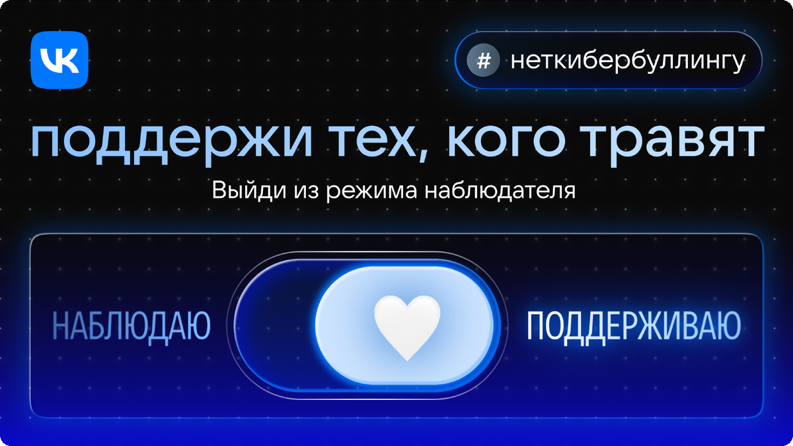
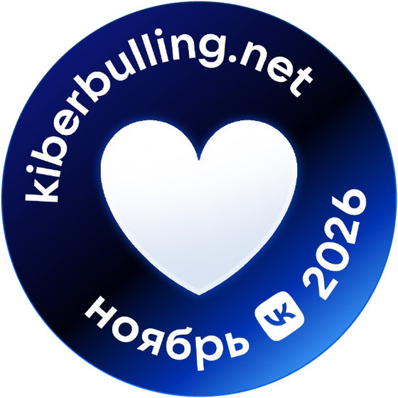
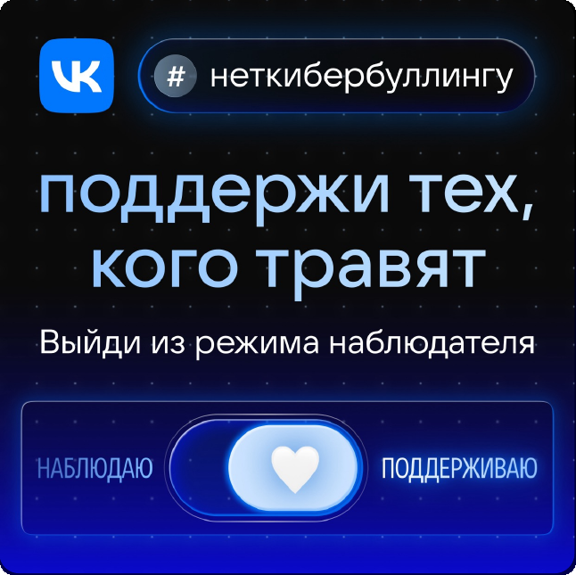

LUIS+ · SMM · социальная кампания
Пост LUIS+ о кампании VK против кибербуллинга
LUIS+luis.ru
LUIS+ — российская компания на рынке систем безопасности и электротехники, работает 30 лет. Дистрибьютор более 2500 брендов и владелец собственных марок LTV, LPA, ЛКД, ЛПТ, LTC и «ЛуисОКЛ»; 18 офисов по России и больше 1300 сотрудников.
- Площадка
- Соцсети LUIS+: лента, сторис, Telegram
- Формат
- Пост в двух версиях
- Год
- 2026
С 2026 года пишу для LUIS+, российского дистрибьютора систем безопасности с 30-летней историей. Компании нужен экспертный контент, который приводит инженеров и проектировщиков из поиска и попадает в AI-ответы. За полгода сдала больше 20 материалов: SEO- и GEO-статьи о видеонаблюдении, СКУД, оповещении, ИБП и пожарной сигнализации, доработку статей под семантику и посты для соцсетей.
Задача
Рассказать подписчикам LUIS+ об участии в кампании VK «Месяц осведомленности о кибербуллинге» и связать акцию с профилем компании. Пост работает на имидж и вовлечение: читателю нужно не одобрить, а сделать простой шаг.
Решение
Собрала пост по партнёрскому тулкиту: сроки, история проекта, ключевое сообщение VK и материалы kiberbulling.net. Выстроила подзаголовки и четыре конкретных действия, писала без пафоса и сделала короткую версию для сторис и Telegram.
Результат
Пост согласован после одной правки в комментариях и стоит в контент-плане на старт кампании 2 ноября. Короткая версия собрана по конструктору тулкита, поэтому её можно публиковать в любом канале без доработки.
Месяц осведомленности о кибербуллинге: пост LUIS+
Пост для соцсетей LUIS+ — партнера кампании VK «Месяц осведомленности о кибербуллинге». Задача — связать участие в социальной акции с основным делом компании и предложить читателю понятные действия, а не только заявить о поддержке.

Пост подготовлен в двух версиях: развернутая — для ленты сообществ, короткая — для сторис, Telegram и анонса. В обеих одна мысль: заметить травлю и не пройти мимо может каждый.
Основной пост
Полная версия рассказывает, к кому обращается кампания в этом году, что есть на сайте проекта и как присоединиться за несколько минут.
Мы присоединяемся к кампании «Месяц осведомленности о кибербуллинге» 🤍
С 1 по 30 ноября VK в восьмой раз проводит социальную акцию против травли в интернете. В 2019 году инициативу поддержали 20 партнеров, в 2025-м — более 350. Мы в LUIS+ поддерживаем проект с 2019 года.
Для компании, которая больше тридцати лет занимается системами безопасности, это продолжение основного дела: защищенным должно быть не только здание или территория, но и пространство общения, где подростки и взрослые проводят по нескольку часов в день. Рассказываем, что будет происходить в ноябре и как присоединиться к кампании.
Кому адресована кампания в этом году
В 2026 году организаторы обращаются к самой массовой аудитории — наблюдателям. К тем, кто видит оскорбления в комментариях, чатах и сообществах, но не вмешивается. Чаще всего не из равнодушия, а потому что не знает, как поступить.

Отсюда ключевое сообщение проекта: «Поддержи тех, кого травят, — выйди из режима наблюдателя». Даже короткая реакция со стороны показывает человеку, что он не один.
Что есть на сайте проекта kiberbulling.net
Сайт задуман как образовательное ядро кампании. На нем собраны материалы для разных форматов участия — от быстрой памятки до документального фильма:
- Памятка «Что делать, если ты стал свидетелем травли в интернете». Рекомендации составлены вместе с психологом и подсказывают, как помочь пострадавшему, даже если вы с ним не знакомы и не хотите вступать в открытый конфликт. Памятку можно скачать, опубликовать у себя или распечатать для подростков.
- Квиз «Какое действие ты выберешь, если увидишь травлю в интернете?». Участник пробует себя в трех ролях, видит последствия каждого решения и читает комментарии психолога.
- Документальный фильм «Травля». Картина в жанре тру-крайм посвящена первому в России уголовному делу о кибербуллинге: как интернет-конфликт 16-летней девушки вырос в масштабную атаку и как ее семья вступила в борьбу с анонимным преследователем.
- Личные истории блогеров и звезд. Известные люди рассказывают, как столкнулись с травлей, что им помогло и как они сами поддерживают других.
Материалы рассчитаны и на взрослых, и на школьников, поэтому ими удобно делиться с родителями, учителями и подростками.
Как поддержать кампанию
Участие не требует подготовки, а каждый шаг занимает несколько минут. Выберите любое из действий:
- Оставить поддерживающий комментарий под постом, где кого-то травят. Можно написать не о конфликте, а о самой публикации, поставить лайк тому, кто уже заступился, или написать пострадавшему личное сообщение.
- Переслать памятку друзьям, в родительский чат или классному руководителю.
- Добавить к своим постам о буллинге хештег #неткибербуллингу и белое сердце 🤍 — символ проекта.
- Пройти квиз и рассказать о результате в социальных сетях.
2 ноября, в день запуска кампании, мы опубликуем памятку и ответим на вопросы в комментариях. Если вы сталкивались с травлей как свидетель и нашли способ помочь, поделитесь опытом под этим постом: такие истории часто полезнее любых инструкций.
Выйди из режима наблюдателя.
#неткибербуллингу 🤍
Короткая версия (сторис, Telegram, анонс в ленте)
Сжатый вариант сохраняет главное — повод, адресата кампании и одно простое действие — и укладывается в формат анонса.

Порядок публикации взят из конструктора поста в тулките: баннер кампании, текст со ссылкой на kiberbulling.net, хештег и белое сердце.
С 1 по 30 ноября VK проводит Месяц осведомленности о кибербуллинге, и LUIS+ снова среди партнеров кампании 🤍
Мы поддерживаем проект с 2019 года: компания, которая занимается системами безопасности, не может оставаться в стороне, когда речь идет о защите людей в интернете. В этом году кампания обращается к наблюдателям — к тем, кто видит травлю в сети и не знает, как поступить.
На сайте kiberbulling.net собраны истории блогеров, документальный фильм «Травля», квиз с комментариями психолога и памятка «Что делать, если ты стал свидетелем травли в интернете».
Поддержать проект можно без подготовки: написать доброе слово под постом, где кого-то обижают, переслать памятку друзьям или добавить к публикации хештег и белое сердце.
#неткибербуллингу 🤍